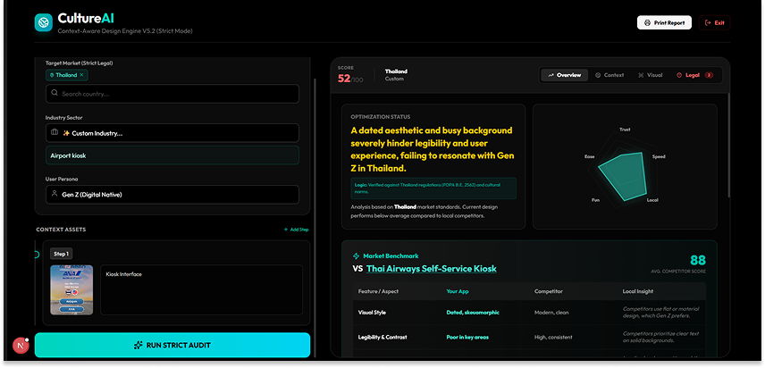

- Role
- Designer & developer
- Type
- AI platform + reporting dashboard
- Year
- 2025
- Research
- JCSSE paper
- Stack
- Figma, Python, ML
01 Research
Turning an academic model into numbers a designer can use.
The paper explores how Hofstede's cultural dimensions can be modelled to evaluate website UIs across cultures. The platform turns those findings into scores, such as power distance and individualism, that a designer can act on.
02 How it works
Crawl, analyse, score, recommend.
- Crawl the UI and extract colour palettes, type hierarchy and spatial relationships.
- Analyse structural, visual and content elements with machine learning.
- Score the interface on cultural dimensions.
- Report interactive charts plus specific UI recommendations.
03 Dashboard
Complex metrics, readable at a glance.
